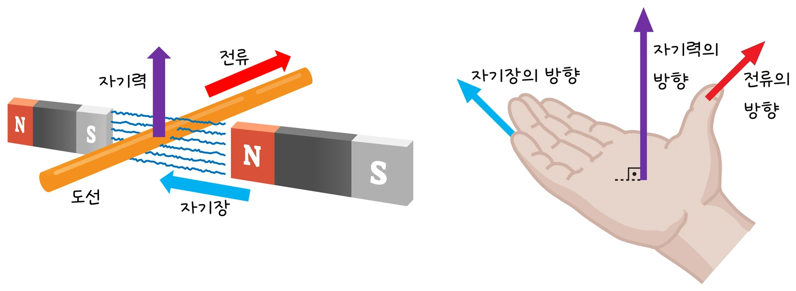

고2 물리학 · Ⅱ 전기와 자기 · 웹툰 11화 「종이컵 스피커」
실험에서 자기장(0.05·0.10·0.20 T), 도선 길이(2·4·6 cm), 전류와 방향을 바꿔 가며 자석을 올린 전자저울의 눈금 변화로 도선이 받는 힘을 쟀습니다. 힘은 B·I·L 각각에 비례했고 전류 방향을 바꾸면 눈금이 반대로 변했습니다. 자기력과 스피커·전동기의 원리를 정리합니다.
실험 데이터 되짚기
자기장은 가우스미터로 잰 값, 도선과 자기장은 수직. 도선이 위로 힘을 받으면 자석은 아래로 눌려 눈금이 늡니다.
| B | I | L | F | 저울 변화 |
|---|---|---|---|---|
| 0.05 T | 2.0 A | 5 cm | 5.0 mN | ±0.51 g |
| 0.05 T | 4.0 A | 5 cm | 10 mN | ±1.02 g (전류 2배) |
| 0.10 T | 2.0 A | 5 cm | 10 mN | ±1.02 g (자기장 2배) |
| 0.10 T | 2.0 A | 10 cm | 20 mN | ±2.04 g (길이 2배) |
| 0.20 T | 3.0 A | 6 cm | 36 mN | ±3.67 g |
F–I, F–L, F–B 그래프 모두 원점을 지나는 직선입니다. 기울기 F/I = BL에서 자기장 B를 역산할 수 있습니다. 전류를 반대로 하면 힘도 반대라 눈금이 줄어듭니다.
자기장 B 속에서 길이 L의 도선에 전류 I가 흐르면 도선은 F = BIL·sinθ의 힘을 받습니다(θ: 전류와 자기장 사이 각, 수직이면 최대). 방향은 플레밍의 왼손 법칙(엄지 힘, 검지 자기장, 중지 전류) 또는 F = IL × B의 벡터곱으로 정해지며, 전류 방향을 바꾸면 힘도 반대가 됩니다. 이 실험은 도선을 고정하고 자석을 저울에 올려 도선이 받는 힘의 반작용을 저울 눈금 변화로 잽니다 — 뉴턴 제3법칙의 응용입니다. 전류 주위에는 자기장이 생기고(오른손 법칙, 전자석), 반대로 자기장 속 전류는 힘을 받습니다.
교재 그림
자기장 속 도선이 받는 힘의 방향

힘은 자기장과 전류 모두에 수직입니다. 오른손을 펴서 네 손가락을 자기장, 엄지를 전류 방향으로 두면 손바닥이 미는 쪽이 힘의 방향 — 본문의 플레밍 왼손 법칙(엄지 힘, 검지 자기장, 중지 전류)과 같은 결과입니다.
움직여 보기
자석 사이 도선이 받는 힘 — 저울로 읽기
⊙는 전류가 화면에서 나오는 쪽, ⊗는 들어가는 쪽입니다. 전류를 (−)로 바꾸면 힘과 눈금이 반대가 되고, B·I·L 중 하나를 2배로 하면 힘도 2배(0.05 T·2 A·5 cm → 5 mN, 0.51 g). 도선이 위로 힘을 받으면 그 반작용으로 자석이 아래로 눌려 저울이 무거워집니다(작용·반작용). '흔들기'는 스피커 코일이 받는 힘처럼 전류 방향이 계속 바뀌는 경우입니다.
종이컵 스피커: 종이컵 바닥의 코일 안쪽에 자석을 놓고 음악 신호(방향과 세기가 빠르게 바뀌는 전류)를 흘리면 코일이 자기장 속에서 전류에 따라 앞뒤로 밀리고 당겨져 종이컵을 떨게 하고 그 떨림이 공기를 흔들어 소리가 됩니다. 한 방향 전류(건전지)는 코일을 한쪽으로 한 번 밀고 끝 — ‘딸깍’ 한 번뿐. 코일을 더 감거나 자석을 세게 하면 힘이 커져 소리가 커집니다. 전동기: 자석 사이의 코일 양쪽이 반대 방향으로 힘을 받아 회전하고, 정류자가 반 바퀴마다 전류 방향을 바꿔 계속 같은 방향으로 돕니다(전기 에너지 → 운동 에너지: 선풍기·세탁기·전기차·드론).
움직여 보기
전동기 — 정류자가 반 바퀴마다 전류를 바꾸면
코일 단면입니다(⊙ 나오는 전류, ⊗ 들어가는 전류, B는 N → S). 오른쪽 변은 위로, 왼쪽 변은 아래로 힘을 받아 코일이 시계 반대 방향으로 돕니다. 정류자 없음으로 켜면 코일이 수직(힘이 회전에 기여 못 하는 자리)을 지나친 뒤 힘이 거꾸로 돌려세워 그 자리에서 흔들리다 멈춥니다. 정류자는 반 바퀴마다 전류를 바꿔 계속 같은 방향으로 돌게 합니다.
자석 사이 자기장이 균일하고 도선 길이 L 구간에만 작용한다고 봤습니다. 실제 자기장은 자석 가장자리에서 약해져 유효 길이가 조금 달라지고 가우스미터로 잰 B도 위치에 따라 변합니다. 도선을 잇는 전선의 다른 부분도 약한 자기장 속에서 작은 힘을 받고 전류 열로 도선 저항이 변할 수 있습니다. 전동기·스피커·하드디스크 헤드는 모두 이 힘으로 움직이며, 전자저울로 자기력을 재는 이 방법은 실제로 ‘전류 저울’로 전류의 단위를 정의하는 데 쓰였습니다.
B 0.05 / 0.10 / 0.20 T · L 2 / 4 / 6 cm · 플레밍 왼손: 엄지 힘, 검지 자기장, 중지 전류
“자석이 만든 자기장 속에 있는 전류는 힘을 받아. 전류가 세거나 자기장이 셀수록 힘도 커져. 전류 방향이 바뀌면 힘의 방향도 바뀌고. 한 방향 전류는 코일을 한쪽으로 한 번 밀고 끝이야. 소리는 떨림이니까, 전류의 방향과 세기가 계속 바뀌어야 해.”
웹툰 11화 · 뭉치: “11라운드! 코일에 건전지를 연결하면 소리가 날까? 난 ‘딸깍 한 번’만 나고 끝.” — 제로 5 : 6 뭉치
“코일을 더 많이 감거나 자석을 더 센 걸로 바꾸면 소리가 커지겠다. 종이컵을 더 큰 걸로 바꾸면?” “직접 설계를 바꿔 가며 비교해 봐. 그게 공학적 설계야.”
웹툰 11화 · 음성 신호(전기) → 코일의 힘 → 진동판 떨림(운동) → 공기 떨림(소리)
F = 0.20 × 2.5 × 0.04 = 0.02 N = 20 mN. 저울 변화 = 0.02 ÷ 9.8 × 1000 ≈ 2.04 g(방향에 따라 ±).
기울기 = BL → B = 0.012 ÷ 0.06 = 0.20 T. 저울 하나로 자기장을 재는 방법입니다.